Строительные материалы.

Наиболее древними строительными материалами являются дерево и натуральный камень, которые не утратили своей значимости по сей день, являясь по-прежнему очень востребованными. Все остальные материалы, из которых возводятся стены, в частности кирпич, бетон и другие, имеют более позднее происхождение и являются искусственными. Рассмотрим их по порядку.
Дерево – традиционный для России материал. Помимо красивой текстуры и своеобразного для каждой породы дерева цвета, древесина отличается легкостью, низкой тепло– и звукопроводностью, прочностью, удобством при обработке, низким коэффициентом температурного расширения, экологичностью. Кроме того, деревянные стены «дышат», благодаря чему обеспечиваются комфортные условия проживания. Однако нельзя не упомянуть и об имеющихся недостатках, в частности древесина легко воспламеняется (но при горении не выделяет вредных веществ); при естественной сушке требует продолжительного времени для осадки (1–1,5 го да); гигроскопична, т. е. способна впитывать влагу, вследствие чего появляются плесени и повреждения, вызванные микроорганизмами; имеет пороки (смоляные карманы, сучки и др.). Однако от таких неприятностей есть проверенные современные средства. Традиционно это обработка антипиренами и антисептиками, но существуют и новые – современные технологии производства пиломатериалов, в частности изготовление клееного бруса.
Качество деловой древесины во многом зависит от времени ее заготовки, способа переработки и условий хранения.
В порядке информирования
Если в старину древесину запасали исключительно зимой, то теперь это можно делать в любое время года; если когда-то лес валили топорами, то в наши дни – бензопилами; если раньше древесину сушили естественным образом, то сейчас – в специальных сушилках. Конечно, остановить прогресс нельзя. Но тем не менее хотим подчеркнуть: все, что мы обозначили словами «в старину», «раньше», «когда-то», имело глубокий смысл и не являлось чьей-то прихотью. Зимой в отсутствие сокодвижения древесина оказывалась природно-сухой. Каждый уважающий себя плотник по одним ему известным приметам безошибочно определял ствол, срубленный в другое время года, и никогда не использовал его в работе. Чтобы древесина равномерно просохла, необходимо правильно разделать ствол. Когда для этой цели применяли топор, то он своим ударом сминал волокна древесины, благодаря чему бревно переставало впитывать влагу и не растрескивалось при сушке и эксплуатации постройки. Естественная сушка древесины могла продолжаться несколько лет, этот этап проходил весь лес, и мастер, владевший знаниями, имевший опыт и чутье, точно определял, когда дерево дозрело. Картина, которую мы наблюдаем сейчас, совершенно другая: работы по заготовке леса не прекращаются круглый год; деревья разделываются прямо на месте вырубки в соответствии с индустриальными схемами; бревна, доски, брусья сушат в камерах по ускоренной методике. В результате мы имеем скрипящие половицы, треснутые бревенчатые стены, перекошенные двери и окна. Надо признать, что современные западные деревообрабатывающие технологии направлены на то, чтобы максимально уменьшить или смягчить негативные результаты индустриализации, но при этом поверхностный слой древесины не удается сохранить в первозданном виде. Если вы обращали внимание, то наверняка замечали, что после всех операций дерево больше напоминает пластмассу. В итоге получается, что, желая окружить себя экологически чистым материалом и выбирая для стен дома дерево, мы все равно становимся заложниками «химии». Выход, однако, есть, но об этом далее.
Таким образом, если вы решили строить дом с деревянными стенами, то есть несколько признаков, по которым можно приблизительно определить, какой лес вы приобретаете, зимний или летний:
1) в июле зимнего леса уже нет в продаже;
2) у бревен, заготовленных зимой, торцы светлые в отличие от летних, которые потемнели под осенними дождями;
3) грязь на коре – еще одно свидетельство, указывающее на то, что перед вами летний лес;
4) при распиле зимнего леса инструмент движется очень плавно и ровно, поэтому продольные спилы лишены волнистости, характерной для летнего леса;
5) при попадании на сердцевину зимнего леса йода она синеет.
Конечно, необходим определенный опыт, чтобы не ошибиться, поэтому покупайте лес только у тех поставщиков, которые хорошо себя зарекомендовали.
Итак, вы решили построить деревянный дом. В связи с этим необходимо приобрести строительные материалы, выбор которых в нашей стране вполне достаточный.
1. Из традиционно использующихся следует назвать строганое бревно диаметром 250–400 мм, которое обрабатывается вручную топором и ручным скобелем, благодаря чему верхний слой, богатый смолами, остается нетронутым, поэтому такое бревно хорошо сопротивляется негативным природно-климатическим воздействиям и меньше трескается. Значительный диаметр бревен улучшает теплоизоляционные свойства стен, хотя и сохнут они достаточно долго. Преимущество рубленых стен состоит в том, что они не требуют дополнительной отделки и утепления, кроме того, для их возведения не понадобятся даже гвозди, поскольку сопряжения стен выполняются с большой точностью. Если вы владеете плотницким ремеслом или имеете на примете мастеров этого дела, то можете остановить свой выбор на этом материале, тем более что бревна ручной обработки (к ней относятся окорение (снятие коры), теска, выборка чашек и пазов, обработка рубанком) в меньшей степени подвержены трещинообразованию и деформации при старении.
Недостатком этого материала является то, что вселиться в дом можно будет только по прошествии 1–2 лет, за время которых сруб осядет, после чего можно будет возобновить строительные работы (зато на строительство не потребуется сразу вся сумма). Но при следовании определенной технологии (например, если оставить зазоры над оконными и дверными проемами) въехать в дом можно будет и сразу. Несмотря на то что повышенная влажность и отсутствие декора создадут некоторые неудобства, стены в жилом доме просохнут быстрее (правда, в этом случае первоначальная сумма должна быть увеличена).
Тесанное вручную бревно имеет такие разновидности, как лафет и полулафет. Первый производится из бревна диаметром 300–350 мм, противоположные стороны которого стесываются до толщины 180–280 мм, поэтому стены и снаружи, и внутри отличаются ровным профилем. У второго стесана только одна сторона – та, что смотрит внутрь. Благодаря такой обработке объем помещения увеличивается, но и стоит такой материал на 20–25 % дороже. Из недостатков обращаем внимание на тот факт, что в обоих случаях бревно останется без защитного слоя.
2. Для изготовления оцилиндрованного используются обычные бревна, которые заранее отбираются с учетом диаметра вершинной части. Поскольку оцилиндрованное бревно проходит обработку на специальном оборудовании, то заготовка должна иметь диаметр на 20 мм больше конечного. Чаще всего реализуется материал диаметром 220 и 240 мм, хотя есть и бревна диаметром 280 мм (обойдется в 1,3–1,5 раза дороже) и даже 500 мм (его стоимость еще выше). После того как бревнам придана форма цилиндра, их раскраивают с применением дисковых и цепных пил на элементы, из которых будут сложены стены будущего дома. В теплое время на бревна наносится антисептик, предотвращающий повреждение древесины вредными микроорганизмами и насекомыми. Различаются оцилиндрованные бревна естественной влажности и сухие. Первые сушатся естественным путем, вторые – в особых сушилках.
На рынке представлены две разновидности оцилиндрованного бревна: обычное и профилированное. У первого на нижней стороне выбрана канавка, у второго, как у профилированного бруса, имеются шип сверху и паз снизу. Но независимо от этого в стене материал смотрится одинаково.
Дом, построенный из оцилиндрованного бревна, функционально практически не уступает рубленому, потому что, во-первых, это технологичный материал, нуждающийся в минимальном применении ручного труда, ведь стены укладываются подобно детскому конструктору, что значительно ускоряет процесс сборки дома и уменьшает общие расходы на строительство; во-вторых, такие операции, как выборка чашек и посадочного канала (от них зависит герметичность венцовых и угловых соединений), осуществляются непосредственно на производстве, и вам останется только поднять стены; в-третьих, оцилиндрованные бревна идеальны по форме и качеству обработки, имеют одинаковый диаметр (160–320 мм), поэтому какая-либо отделка или облицовка является излишней; в-четвертых, бревна в сборе настолько плотно прилегают одно к другому, что теплоизоляционные качества дома будут высокими, этому способствует и низкая теплопроводность древесины вообще и оцилиндрованного бревна в частности; в-пятых, экологичность и способность поддерживать оптимальный воздухообмен; в-шестых, безусловно, неплохой внешний вид постройки. Все это в совокупности делает оцилиндрованное бревно очень привлекательным для строительства дома.
Но считаем своим долгом упомянуть и о некоторых недостатках этого материала:
1) поскольку диаметр оцилиндрованного бревна меньше, чем у строганого, то теплоемкость стен уменьшается, площадь стыков между бревнами сокращается, а их количество возрастает. Если, например, в традиционных срубах на этаж приходится не более 8–9 стыков, то в стенах из оцилиндрованного бревна их 12–13. Поэтому такие стены продуваются сильнее;
2) основной недостаток оцилиндрованного бревна связан с его влажностью. Если лес сушится с соблюдением всех требований технологии, то полученные бревна не покроются трещинами, не деформируются, осадка составит 6–8 см. Бревна естественной сушки подвержены сильной осадке – в отдельных случаях на 10–15 см, что потребует осуществления конопатных работ;
3) в процессе эксплуатации дома придется постоянно поддерживать его в надлежащем состоянии и обрабатывать антисептическими составами, так как оцилиндрованное бревно в большой степени подвержено воздействию природно-климатических факторов, что сопряжено со значительными расходами. При отсутствии обработки стены постепенно изменят свой естественный цвет на серый;
4) кроме того, в условиях нашей действительности недобросовестные производители нередко работают на устаревшем оборудовании, нарушают режим сушки, соблюдение которого – главное условие того, что после постройки бревна не поведет. Материал же, приобретенный у иностранных компаний, соответствует всем нормам, но отличается высокой ценой.
3. В деревянном домостроении применяется пиленый (нестроганый) брус равностороннего сечения (100 x 100, 120 x 120, 140 x 140, 150 x 100, 150 x 150, 180 x 180, 200 x 150, 200 x 200 мм). Этот материал обладает определенными достоинствами, в частности малый вес всей конструкции, поэтому усиления фундамента не потребуется; стены из него стыкуются под любым углом (например, можно построить эркер). Для небольшого дачного домика это неплохой вариант. Если вы планируете возвести коттедж, то нужно иметь в виду, что стены из такого бруса нуждаются в двухстороннем утеплении и облицовке (у него отсутствует тепловой замок, имеющийся, например, у правильно подготовленного бревна, и это потребует достаточно больших расходов); при высыхании брус склонен к значительной деформации, поэтому придется приобрести и соответствующий крепеж для соединения венцов по всей длине; в большей степени, чем оцилиндрованное бревно, брус подвержен воздействию природно-климатических факторов, для устранения которого придется периодически обрабатывать наружную поверхность стен антисептиками, а при отсутствии облицовки – средствами с УФ-фильтрами. В конечном итоге экономия при приобретении строительного материала существенно уменьшится. Правда, строительство такого дома можно вести не один год, вкладывая средства отдельными траншами (частями).
В порядке информирования
Выгоднее всего приобрести брус сечением 150 x 150 мм; более толстый (200 x 200 мм), конечно, очень хорош, но, во-первых, стоит намного дороже, во-вторых, встречается не так часто, ведь для его производства требуется отборный кругляк. Брус сечением 100 x 100 мм невыгоден по целому ряду причин. Первая причина самая очевидная – стена толщиной 100 мм будет холодней, чем стопятидесятимиллиметровая, поэтому придется подумать о ее утеплении (а это еще затраты). Вторая состоит в том, что трудоемкость строительства значительно повысится, ведь количество венцов и соответственно межвенцовых швов, между которыми нужно будет разместить уплотнитель и потом проконопатить, тоже возрастет, причем в 1,5 раза (опять расходы). Третья заключается в том, что не удастся построить комнату площадью более 16 м , т. е. 4 x 4 м, так как при большей длине внешней стены нужна будет перевязка с внутренней, иначе при отсутствии таких ребер жесткости она утратит устойчивость. Если взять брус сечением 150 x 150 мм, то длину стены можно увеличить до 6 м, т. е. комната будет иметь площадь 36 м , что более приемлемо. Поскольку брус склонен к деформации, то чем он тоньше, тем сильнее это выражено, ведь опорная поверхность у него довольно маленькая. Если есть возможность приобрести брус сечением 200 x 200 мм, мы не будем вас от этого отговаривать. Несмотря на то что теплопотери такой стены не слишком отличаются от стопятидесятимиллиметровой, толстый брус имеет неоспоримые достоинства: во-первых, будучи более жестким, такой материал позволяет построить дом площадью 150 м и более; во-вторых, стена будет смотреться более красиво, так как количество межвенцовых швов значительно уменьшится; в-третьих, если вы захотите отделать стену снаружи, то обрешетку делать не придется. Дело в том, что брус естественной влажности имеет определенный допуск по толщине – ±5 мм, поэтому обрешетка необходима для того, чтобы скрыть неровности поверхности. Брус сечением 200 x 200 мм не имеет таких недостатков, поскольку изготавливается по-другому: заготовку строгают, шлифуют и наносят биовлагозащитное средство.
4. Одним из популярных материалов в деревянном домостроении является профилированный брус. От предыдущего он отличается тем, что ему придается профиль, т. е. строго определенная форма (например, наружная сторона (обращенная к улице) может быть выпуклой, а внутренняя плоской; обе стороны бывают выпуклыми или плоскими), снабженный системой соединения «шип – паз» (на нешироком брусе, выполняются, как правило, один шип сверху и один паз под него снизу; на более широком количество шипов и пазов может достигать трех – пяти, и чем их больше, тем лучше, поскольку благодаря лабиринтному уплотнению стена становится практически непродуваемой). Чаще всего встречается брус сечением 150 x 145 мм, но не исключены и другие параметры (как в сторону увеличения, так и в сторону уменьшения): 210 x 200 и 145 x 100 мм.
Поскольку вся обработка происходит в условиях производства, стены из профилированного бруса обладают рядом достоинств:
1) получаются абсолютно ровными и не требуют обшивки;
2) профиль, придающийся материалу, имеет такую форму, благодаря которой дождевая и снеговая вода не проникает между венцами, поэтому не появляются условия для возникновения гниения;
3) дом после осадки (по ГОСТу она составляет 14–16 %, но отдельные виды древесины имеют гораздо более низкий показатель, например у сосны и кедра это 3,5 %, у лиственницы 4,5 %) не нуждается в конопатке, вполне достаточно джута, который прокладывается сразу при возведении стен;
4) замковое соединение венцов обеспечивает качественную теплоизоляцию;
5) профилированный брус в меньшей степени, чем оцилиндрованное бревно, подвержен трещинообразованию и меньше, чем пиленый брус, деформации;
6) поскольку профилированный брус представляет собой массив древесины, то он сохраняет все положительные свойства цельного бревна, т. е. отличается способностью «дышать» и экологичностью;
7) поскольку профилированный брус обходится дешевле, чем, например, клееный (приблизительно в два раза), то и строительство соответственно тоже.
Есть у профилированного бруса и недостатки:
1) нельзя приступать к отделке дома до тех пор, пока брус не наберет необходимую относительную влажность;
2) в процессе высыхания бруса не исключено появление на нем трещин. Чем выше была температура воздуха во время строительства, тем больше трещин образуется и тем они будут значительнее. Ведь древесина в разных сечениях высушивается по-разному, что создает почву для возникновения внутренних напряжений и трещин. Это особенно реально, если не используется соответствующая технология, согласно которой превентивно производятся надпилы, задающие направление трещины.
Профилированный брус стоит достаточно дорого, но по соотношению цены, сложности постройки и ее эксплуатационных характеристик выбор данного материала можно считать оптимальным.
В порядке информирования
О профилированном брусе необходимо добавить следующее. В процессе его изготовления материал обрабатывается на строгальном станке, поэтому по крайней мере одна его сторона оказывается достаточно гладкой. Если вы не планируете отделывать стену с какой-либо стороны, то нужно остановить свой выбор на таком брусе. Благодаря профилю, который ему придается, при осадке стен щели между элементами окажутся не столь значительными. От обычного бруса профилированный отличает и достаточно строгая геометрия, т. е. допуск по ширине и высоте не превышает ±1–1,5 мм (в противном случае пазы и шипы не совпадут). Сухой брус имеет те же достоинства, что и брус естественной сушки, а отличается тем, что в дом из него можно въезжать сразу. Что касается недостатков, то их несколько больше: во-первых, этот материал более дорогой, поэтому и общая стоимость строительства возрастет (на дом площадью 64 м потребуется 35 м леса); во-вторых, при строительстве потребуется приобрести специальный крепеж, поскольку по вертикали венцы соединяются не нагелями или гвоздями, а стальными шпильками, стоимость которых колеблется от 400 до 1000 рублей за 1 пог. м (это определяется длиной, материалом и наличием защитного покрытия); в-третьих, между венцами необходимо будет проложить тонкослойный вспененный уплотнитель (такой же настилают под ламинат), а для отделки нужно использовать только сухой материал: вагонку и половую доску.
5. Клееный брус – это пока еще довольно новый (или хорошо забытый старый?) материал на нашем строительном поле, но завоевывающий все большую популярность. Производство клееного бруса состоит в том, что бревна распиливаются на доски (размеры бывают разными: 205 x 6150 x 52 или 155 x 6150 x 51 мм), проходят процесс сушки до достижения необходимого уровня влажности. Подготовленные таким образом ламели (отдельные доски) покрываются антисептиками и антипиренами, сплачиваются на микрошип, острагиваются и склеиваются. В готовом брусе может быть 2–5 ламелей, при этом они располагаются как горизонтально, так и вертикально. На конечном этапе брус либо сохраняет естественный профиль, либо фрезеруется и приобретает необходимую форму. Изготавливаются несколько видов клееного бруса: стеновой, оконный, несущие балки.
Этот современный материал обладает определенными достоинствами:
1) брус (для обычного индивидуального строительства используется материал толщиной 250 мм, для элитного – 500 мм) дает высококачественную поверхность и имеет превосходный внешний вид. Это достигается благодаря тому, что перед склеиванием древесины с лицевых досок устраняются все дефекты, и материал подбирается по текстуре и цвету (о том, что оказывается внутри, знает только производитель);
2) влажность клееного бруса не превышает 12 %, он не покрывается трещинами ни при сушке, ни в процессе эксплуатации постройки;
3) при склеивании заготовки ориентированы в противоположные стороны, т. е. в нем отсутствует внутреннее напряжение, благодаря чему материал сохраняет форму, геометрические размеры, не деформируется и не дает осадки;
4) прочность клееного бруса на 50–70 % превосходит тот же показатель массива, что обеспечивается технологией склеивания ламелей: древесные волокна ориентированы наружу;
5) весь комплект доставляют на участок в готовом виде (это означает, что обработка поверхностей и соединения осуществляется в условиях производства, поэтому нет необходимости в подгонке заготовок). Применяя такой материал, можно значительно сократить сроки строительства, поскольку стены монтируются без каких-либо специальных приспособлений, гвоздей, раствора, клея; без участия тяжелой строительной техники; независимо от времени года; не нуждаются в конопатке (осадка не превышает 1 %) и какой-либо отделке. Кроме того, дом не требует выдержки и все внутренние работы могут производиться сразу же после постройки, на которую уходит примерно 5–6 недель;
6) высокие прочностные характеристики клееного бруса позволяют возводить большие по площади дома при меньшем количестве несущих стен (длина балок может составлять 18 м, поэтому длинные пролеты без установки промежуточных опор – это реальность);
7) дом из клееного бруса не нуждается в утеплителях, так как все детали выполнены с высокой точностью и максимально плотно прилегают друг к другу, поэтому стены не продуваются, не промерзают, не пропускают влагу;
8) благодаря обработке клееный брус отличается достаточной пожаростойкостью и не подвержен воздействию вредителей и микроорганизмов;
9) использование этого материала уменьшает общую стоимость строительных работ. Если сравнить вес дома из клееного бруса с аналогичным по размеру, но выполненным из кирпича или камня, то окажется, что конструкции первого весят в 4–6 раз меньше. Следовательно, такая постройка не предполагает усиления фундамента. Расход древесины меньше, чем других материалов. Поэтому деревянная стена обойдется дешевле.
Несмотря на немалое количество положительных моментов, клееный брус не лишен и недостатков, в частности дом, построенный из него, обойдется в 2–3 раза дороже, чем возведенный из цельного бруса, т. е. это дорогое удовольствие. Кроме того, нельзя не заметить, что клееный брус не совсем натуральный материал (распиловка, применение клея, составов для обработки разрушают структуру древесины и ликвидируют воздухообмен на капиллярном уровне) и поэтому менее экологичен, чем обычное бревно, хотя производители утверждают обратное.
К сказанному следует добавить, что дом из клееного бруса смотрится очень эффектно, и комплекс хороших эксплуатационных характеристик вполне объясняет его популярность.
Охарактеризованные строительные материалы представлены на рис. 2.
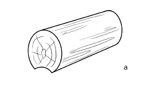
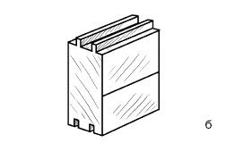
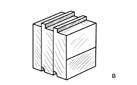
Рис. 2. Некоторые современные стеновые строительные материалы: а – оцилиндрованное бревно; б – профилированный брус; в – клееный брус
В порядке информирования
Если вы решили строить деревянный дом, то неизбежна альтернатива – что лучше: строганое или оцилиндрованное бревно, профилированный или клееный брус? Понятно, что производители подчеркивают достоинства и нивелируют недостатки того строительного материала, из которого возводят дома сами. Что же делать неискушенному застройщику, если он не имеет необходимых познаний в этой области и верит всему, что слышит? Мы не станем навязывать своего мнения, но попробуем выстроить логическую цепочку, которая поможет разобраться в сложившейся ситуации и определиться с выбором. На строительном рынке наметилась тенденция к возведению индивидуальных домов из клееного бруса, который рекламируется как модный и престижный. Однако напомним, что деревянные клееные конструкции появились в Советском Союзе еще в 1930–40-х гг., но, поскольку с лесом в нашей стране проблем не было, этот строительный материал не получил широкого распространения, тем более что классическое рубленое бревно было не только более привычным и надежным, но и дешевым. В Европе, бедной лесными запасами, складывалась другая ситуация: импорт древесины обходился очень дорого, поэтому начали искать пути экономии сырья, разработали и внедрили ряд программ (в том числе и по производству клееного бруса) по безотходным технологиям. Настойчивая и грамотная информационная работа по продвижению этого товара принесла свои плоды: сформировался интерес к новому материалу и повысился спрос на него в современной России. Запад от этого только выиграл, получив и безотходное производство, и огромный рынок сбыта в лице нашей страны. Более того, в настоящее время создано огромное количество отечественных предприятий по производству клееного бруса. Но между импортным материалом, например финским, который подвергается жесткому контролю на всех этапах производства (древесина, склеивание и экологичность готовой продукции у них должны соответствовать строгим стандартам, поэтому высокое качество и соответствующая цена этого материала (в Европе клееный брус стоит гораздо дешевле массивного бревна)), и нашим, как говорится, «дистанция огромного размера». Наш производитель в погоне за прибылью нередко использует сырье низкого сорта – так называемый тонкомер (эта древесина стоит в 2–4 раза меньше, чем строевой лес); применяет некачественные клеи; экономит на тестировании прочности склейки; унифицирует элементы домовой конструкции, в частности независимо от предназначения элементов дома заготовки выполняются трех-четырех размеров по толщине, следовательно, не тратится время на перенастройку оборудования на лесопильном участке, возрастает коэффициент выхода обрезного пиломатериала и готовой продукции. Если сравнить это с производством оцилиндрованного бревна, то там данный показатель, естественно, ниже, так как для этого материала подходит только отборное сырье. В заключение добавим, что 1 м клееного бруса стоит в 3 раза больше, чем такое же количество оцилиндрованного бревна, прошедшего естественную сушку, и в 1,5 раза больше сухого.
При строительстве важно определиться и с породой древесины, которая пойдет на стены. Чаще всего используется сосна – дерево хвойной породы. Ее древесина ядровая, мягкая, поэтому хорошо поддается обработке, не склонна к трещинообразованию, отличается привлекательной текстурой (побеги на сосне располагаются под острым углом к стволу, поэтому на разрезе имеют форму овала). Цена такого леса определяется диаметром и длиной бревен: чем они больше, тем материал дороже.
Как правило, поставляется лес длиной 6 м, при этом максимальная длина 12,2 м (это зависит от габаритов вагона).
Сосна, заготовленная на севере Кировской области, считается северной. Древесина ее более плотная (примерно 1 т/м ), чем у деревьев средней полосы, и цена более высокая. Но самой дорогой является ангарская сосна, которая имеет ряд отличительных признаков: она еще более плотная (тонет в воде), с темной сердцевиной и тонкими годовыми кольцами.
Второе место после сосны занимает ель, древесина которой безъядровая, мягкая, приятного белого цвета с золотистым оттенком, который она не утрачивает в течение длительного времени. Обилие твердых сучков делает обработку ели более трудной.
К хвойным породам принадлежит и лиственница, плотность древесины которой превышает этот показатель у сосны на 30 %. Значит, дома из нее могут стоять даже не десятки лет, а века! Благодаря наличию смолы лиственница не поражается вредными микроорганизмами и насекомыми, поэтому нет необходимости обрабатывать материал антисептиками. Тем не менее ее редко используют в деревянном строительстве, поскольку лиственница трудна в обработке (ее плотность 1,15 т/м ), сохнет не менее 5–7 лет и подвержена трещинообразованию.
Дубовые стены – это всегда надежно, добротно и красиво. Дуб обладает прочной и очень твердой (поэтому обработка материала сопряжена с определенными трудностями), но склонной к растрескиванию древесиной.
Осина дает прекрасный материал, который по устойчивости сродни дубу. Она однородна, не скалывается, не сминается, не склонна к трещинообразованию и короблению. Есть сведения, согласно которым осину для стен заготавливали так: на коре прорубали несколько канавок, благодаря которым древесина не прела и при этом сохраняла необходимую влажность.
Таким образом, для строительства можно применять практически любую древесину, но при этом всетаки традиционно для бани более всего подойдут липа или осина, а для дома – сосна, ель, лиственница, кедр, пихта. Профессионалы рекомендуют несколько нижних венцов выполнять из твердой древесины, что значительно продлит срок службы постройки.
К сказанному о древесине и строительных материалах, из нее изготовленных, остается только добавить, что, какой бы материал вы ни избрали для стен своего дома, у каждого есть положительные свойства и недостатки. Позволим себе только совет: приобретайте тот материал, в котором цена и качество оптимально сочетаются.
Стены строятся не только из древесины, но и из так называемых штучных материалов, номенклатура которых огромна, поскольку они различаются целым рядом признаков, по которым их можно классифицировать:
1) по размеру:
а) кирпич;
б) камни (блоки);
2) по составу и способу изготовления:
а) керамические кирпичи и блоки;
б) силикатные кирпичи и блоки;
в) бетонные блоки;
3) по наличию пустот:
а) полнотелые;
б) пустотелые;
4) по назначению:
а) рядовые;
б) лицевые;
в) специальные (дорожный, огнеупорный).
Кирпич – традиционный искусственный материал для индивидуального строительства, который отличается прочностью и долговечностью (при наличии надежного фундамента кирпичное здание может стоять многие десятилетия).
В соответствии с составом и способом производства кирпич бывает керамический и силикатный. Технологически керамический кирпич получают посредством обжига глины, в которую введены соответствующие добавки. Данный материал пригоден не только для кладки стен и перегородок – из него возводят фундамент, применяют в печной кладке.
Размер и форма кирпича установлены ГОСТом. Согласно ему одинарный полнотелый кирпич («кирпич глиняный обыкновенный») представляет собой прямоугольный брусок длиной 250 мм, шириной 120 мм и высотой 65 мм. Такие параметры выбраны не случайно: они дают возможность осуществлять кладку, чередуя положение кирпичей по отношению к ее оси.
Каждая грань кирпича имеет определенные названия: самая маленькая – тычок, самая большая – постель, между ними (по величине) – ложок (рис. 3).
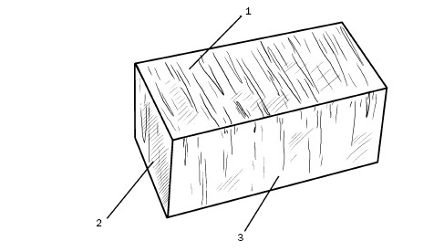
Рис. 3. Глиняный обыкновенный кирпич: 1 – постель; 2 – тычок; 3 – ложок
Помимо кирпича стандартного размера, производятся полуторный и двойной. Размеры первого: 250 x 120 x 103 мм, второго: 250 x 120 x 138 мм, причем двойной кирпич имеет другое название – «камень керамический». Благодаря такой величине процесс кладки значительно ускоряется.
Кроме того, что кирпич бывает полнотелым, производятся также пустотелый и поризованный (рис. 4). Наличие пустот снижает теплопроводность кирпича и его вес, что не только экономит материал, но и облегчает работу каменщика. Если увеличить пористость кирпича, то возрастут его теплоизоляционные качества, а также звукопоглощение.
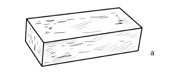
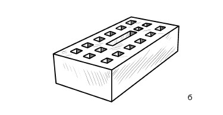
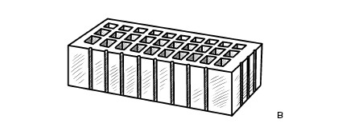
Рис. 4. Кирпич: а – полнотелый; б – пустотелый; в – поризованный
К полнотелым относятся кирпич, не имеющий пустот, и такой материал, в котором объем пустот не превышает 13 % объема кирпича.
Полнотелым бывает исключительно одинарный кирпич, иногда – утолщенный, поскольку вес кирпича не должен превышать 4,3 кг. (Вес полнотелого красного кирпича (250 x 120 x 65 мм) составляет 3,5–3,8 кг, следовательно, 1 м , который содержит 480 кирпичей, весит 1700 кг.)
Кирпич и камни считаются пустотелыми при объеме пустот более 13 %, как правило, они составляют 25–45 %. Форма и размер пустот бывают различными, при этом материал должен соответствовать определенным параметрам, в частности при вертикально расположенных пустотах толщина наружных стенок должна быть не менее 12 мм; ширина щелевых пустот не должна превышать 16 мм; диаметр или сторона круглых или квадратных пустот – не более 20 мм.
По способу изготовления материал представлен двумя группами: в одной кирпич пластического формования, в другой – полусухого прессования.
В порядке информирования
При пластическом формовании исходную массу, в которой содержится примерно 20 % влаги, выдавливают на ленточных прессах (экструдерах). Первоначально кирпич выходит в виде непрерывного бруска, который разрезается на части по плоскости постели. Потом заготовки (кирпич-сырец) проходят стадии сушки и обжига. Поскольку при этом влага испаряется, масса кирпича уменьшается на 5–10 %. Так получают полнотелый кирпич. При производстве пустотелого кирпича все стадии производства сохраняются, а пустоты создают керны, которые установлены в выходной части головки пресса. Формованием пустотелого кирпича решается сразу несколько задач: во-первых, значительно улучшаются эксплуатационные качества изделия (уменьшается масса кирпича, снижается его теплопроводность, облагораживается внешний вид); во-вторых, позитивно изменяется технологичность процесса, поскольку при наличии пустот кирпич быстрее сохнет, следовательно, экономится топливо; снимается проблема внутреннего напряжения, которое возникает в материале при сушке; прогрев изделий существенно ускоряется, причем равномерно по всему объему изделия, в результате кирпич приобретает геометрическую точность, устраняется риск трещинообразования в нем, что в совокупности обеспечивает высокое качество конечной продукции. Но следует признать, что формование пустотелого кирпича-сырца сопряжено с большими трудностями, чем изготовление полнотелого изделия, поскольку к сырьевой массе предъявляются повышенные требования.
При полусухом прессовании кирпич поштучно формуется из сыпучей глиняной массы, влажность которой составляет, как минимум, 10 %. Чтобы уменьшить массу готового изделия, такой кирпич выпускается только пустотелым. Благодаря особенностям производства (небольшая влажность исходного состава, поштучное формование) кирпич отличается более правильной формой и размерами. Однако вследствие особого строения черепка морозостойкость у такого материала ниже, чем у кирпича пластического формования.
Различить кирпич, изготовленный разными способами, можно по такому признаку: у изделий полусухого прессования (рис. 5) пустоты имеют коническую форму и, как правило, не бывают сквозными.
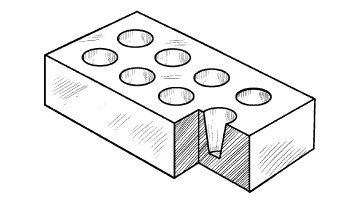
Рис. 5. Кирпич полусухого прессования
Керамический камень имеет то же предназначение, что и кирпич, он при кладке заменяет два кирпича с учетом растворного шва между ними. В соответствии с размерами керамический камень подразделяется на:
1) обычный (250 x 120 x 138 мм);
2) укрупненный (250 x 250 x 138 мм);
3) модульный (288 x 138 x 138 мм);
4) с горизонтальными пустотами (250 x 250 x 120 мм).
Если кирпич может быть и пусто-, и полнотелым, то камень – только пустотелым. Этот материал (рис. 6) имеет разное предназначение и может использоваться для кладки:
1) наружных и внутренних несущих стен и стен каркасных построек. Из них можно класть и перегородки. Но керамические камни не допускаются для кладки фундамента, цоколя ниже слоя гидроизоляции, а также стен в помещениях повышенной влажности;
2) внутренних несущих стен и перегородок. Допускается их применение в каркасном строительстве. Ограничения те же.
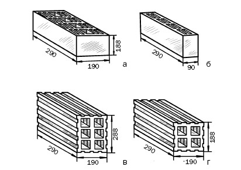
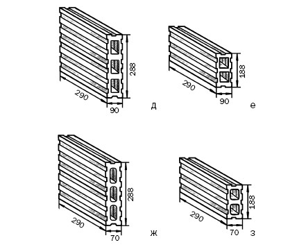
Рис. 6. Блоки (камни) керамические пустотелые (размеры указаны в миллиметрах): а, б – для несущих стен; в, г, д, е – для каркасных стен; ж, з – для внутренних перегородок
Силикатный кирпич примерно на 90 % состоит из песка. Оставшиеся 10 % приходятся на известь и небольшое количество определенных добавок. Он изготавливается в автоклавах в условиях повышенного давления и при температуре 170–180 °C. По прочности не отличается от керамического, но по сравнению с ним силикатный кирпич более легкий, не столь морозо– и водостойкий, совершенно нежаростойкий, характеризуется большей теплопроводностью, поэтому и сфера его применения гораздо уже. Он применяется для кладки стен и перегородок и не используется в таких ответственных конструкциях, как фундамент, цоколь (допускается только в сухих грунтах), печь и др. Но при сухом режиме эксплуатации силикатный кирпич такой же долговечный, как и керамический.
Силикатные камни производятся только пустотелыми, имеют вертикальные пустоты (диаметр 30–32 мм), с верхней стороны они замкнутые. Применение этого материала такое же, как и у силикатного кирпича.
Бетонные камни являются распространенным строительным материалом, применяются для кладки стен, фундаментов и перегородок и в зависимости от размера представлены следующими разновидностями:
1) целым (390 x 190 x 188 мм);
2) продольными половинами (390 x 90 x 188 мм);
3) перегородчатыми (590 x 90 x 188 мм).
Подробная характеристика блоков (камней) из бетона и растворов представлена ниже.
Из рядового кирпича (блоков) строятся несущие стены. Для него характерны высокие прочностные качества и при этом недостаточная стойкость к воздействию как природно-климатических факторов, так и агрессивной окружающей среды, вследствие чего стены из этих материалов нуждаются в защитно-декоративном покрытии. Их либо оштукатуривают, либо облицовывают различными материалами.
По-другому лицевой кирпич (блоки) называют облицовочным, фасадным, отделочным. Он отличается правильной формой, наличием четких граней и однородностью окраски (за счет вводимых пигментов материалу можно придавать практически любой оттенок). Кроме того, облицовочный кирпич и блоки различаются фактурой: их поверхность бывает гладкой, волнистой, шероховатой, имитирующей натуральный или колотый камень и пр.
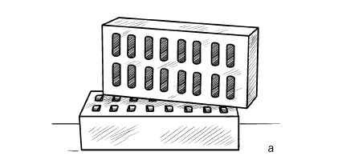
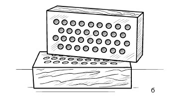
Рис. 7. Лицевой кирпич: а – гладкий щелевой; б – рифленый пустотелый
Лицевой кирпич (рис. 7) и камни используются для наружных работ, потому что эти материалы стойки к природно-климатическим факторам (морозам, осадкам). Они пригодны и для кладки, и для облицовки стен (наружных и внутренних). Лицевой кирпич обычно бывает пустотелым, благодаря чему качество черепка улучшается.
В настоящее время производится фасонный (фигурный, профильный) кирпич (рис. 8). Благодаря тому, что он имеет разную форму, цвет, размер и фактуру, реализуются различные архитектурные решения при устройстве дверных и оконных проемов, возведении арок, эркеров и др.
Специальные материалы (рис. 9) используются в тех случаях, когда предполагаются особые условия эксплуатации.
Например, шамотный кирпич предназначен для кладки печей, поскольку он рассчитан на высокие температуры (более 1000 °C).
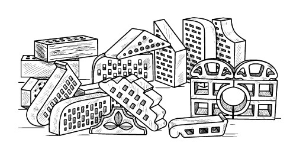
Рис. 8. Фасонный кирпич
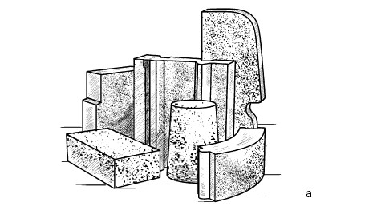
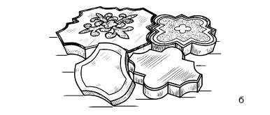
Рис. 9. Специальный кирпич: а – огнеупорный; б – клинкерный
В порядке информирования
Качество кирпича, который применяется в строительстве, подчиняется ГОСТу 7484-78 «Кирпич и камни керамические лицевые. Технические условия» и ГОСТу 530-95 «Кирпич и камни керамические. Технические условия». Качественный кирпич должен соответствовать:
1) заявленной марке по прочности, а также нормативу по водопоглощению (не менее 8 и 6 % для полно– и пустотелого соответственно);
2) марке по морозостойкости по пористости;
3) экологической норме, согласно которой удельная эффективная активность естественных радионуклидов не должна быть более 370 Бк/кг;
4) стандартным размерам. Для рядового кирпича допустимые отклонения составляют ±5, ±4, ±3 мм по длине, ширине и высоте соответственно; для облицовочного – ±4, ±3, ±2–3 мм по тем же параметрам. Грани у кирпича должны быть плоскими, ребра прямолинейными (рядовой может иметь закругления вертикальных ребер радиусом до 15 мм). Средняя часть кирпича должна быть немного темнее, чем остальная масса. Звук при ударе должен быть гулким.
Кирпич не должен содержать каких-либо включений, в частности извести (впитывая влагу, она разбухает, разрушая этим кирпич) и фрагментов камня. Стандартами предусматриваются дефекты:
1) допустимые: а) у рядового кирпича могут быть отбитые углы глубиной 10–15 мм и(или) дефекты ребер глубиной не более 10 мм, длиной 10–15 мм, но не более двух изъянов на один брусок; трещины глубиной не более 30 мм, но не более одного изъяна на ложковой и тычковой гранях; отколы поверхности глубиной 3–10 мм, но не более трех изъянов на брусок; б) это же относится и к облицовочному кирпичу, за исключением его лицевой поверхности, на которой не должно быть никаких изъянов (сколов, включений, пятен и пр.), заметных с расстояния 10 м при дневном свете;
2) недопустимые, возникающие при нарушении технологии производства: а) недожог. У кирпича цвет изменяется на горчичный, звук становится глухим, его морозо– и водостойкость снижены; б) пережог. На кирпиче образуются подпалины черного цвета, изменяется форма, его плотность и теплопроводность повышены. Если кирпич сохраняет форму, то специалисты считают, что его прочность возрастает и этот материал может применяться для кладки фундамента и там, где повышенная теплопроводность не играет решающей роли; в) высолы. Как правило, обнаруживаются не на отдельных брусках, а на стенах, которые покрываются пятнами и разводами белого цвета. Существует несколько рекомендаций, следование которым помогает избежать появления такого дефекта:
• использовать для кладки густой раствор;
• следить за тем, чтобы раствор не загрязнял лицевую сторону кирпича;
• вести работы в сухую погоду;
• обрабатывать стены специальными составами;
• при перерывах в кладке (независимо от того, на какое время) накрывать ее водонепроницаемой пленкой;
• стремиться к тому, чтобы готовые стены были бы сразу же подведены под крышу.
Помимо чисто внешних характеристик, кирпич имеет целый ряд технических, в частности прочность, морозостойкость и водопоглощение.
Прочность – это «способность материала сопротивляться внутренним напряжениям и деформациям, не разрушаясь». Показателем прочности является марка, для которой введено буквенно-цифровое обозначение, например М100. Цифра указывает, какую нагрузку, приходящуюся на 1 см , сможет выдержать кирпич, следовательно, в нашем примере такая нагрузка составляет 100 кг. Кирпич производится под марками от 75 до 300 (в соответствии со стандартом всего восемь марок). Для индивидуального строительства оптимальным считается материал марки М100.
Морозостойкость (Мрз) – важный показатель, который представляет собой способность кирпича противостоять периодически повторяющимся замораживанию (–18–2 °C) и оттаиванию (2–20 °C) при наличии в его порах воды. Увлажнение и замораживание, которые в наших природно-климатических условиях регулярно сменяют друг друга, в совокупности являются основным деструктивным фактором, от которого зависит долговечность большинства строительных материалов, использующихся в средней полосе России.
Этот показатель измеряется в циклах. Стандартный цикл, в процессе которого тестируется кирпич, составляет 16 ч, при этом половину этого времени материал лежит в воде, а во время оставшихся 8 ч – в морозильной камере. Испытания продолжаются до момента, когда в материале начнутся структурные изменения, т. е. он изменит массу, прочность, появятся трещины, шелушение поверхности и пр. Морозостойкость кирпича также имеет буквенно-цифровое выражение. По этой характеристике выпускаются следующие марки: F15, F25, F35, F50.
Поскольку в нашей стране регионы имеют различные природно-климатические условия, то для строительства используется кирпич разной морозостойкости. Например, в средней полосе России данный показатель составляет 35 циклов. Чем более морозостойким является кирпич, тем выше его стоимость.
Кирпич, являясь пористым материалом, может впитывать влагу. Эта его способность измеряется в процентах, т. е. в соответствии с установленными нормами данный показатель варьируется в пределах 6–16 %. Для наружных стен рекомендуется кирпич с наиболее низким водопоглощением.
Основные характеристики керамического кирпича представлены в табл. 1.
В порядке информирования
Если вы решили строить дом из кирпича, то в первую очередь потребуется приобрести данный строительный материал и доставить его на участок. И очень важно сделать это грамотно. Поэтому мы хотим дать вам несколько советов по поводу покупки кирпича.
1. Прежде всего поинтересуйтесь, есть ли у продавца сертификат, и обязательно ознакомьтесь с ним.
2. Если вы начинаете строительство двух– или трехэтажного дома, то для стен подойдет кирпич М100–125, F35–50.
3. Рядовой и облицовочный кирпич должны быть одной и той же марки (по крайней мере соседней), поскольку от этого зависит, будут ли стены иметь одинаковую прочность.
4. Предпочтителен двойной кирпич, так как выгоден, ведь при его использовании возрастет скорость кладки и сэкономится кладочный раствор, а следовательно, и деньги.
5. Если предполагается отделывать дом, то все количество облицовочного кирпича, которое потребуется для работы, закупите сразу, поскольку отдельные партии могут заметно отличаться по цвету. Кстати, цвет на качество кирпича не оказывает никакого воздействия, поэтому вы можете выбрать себе любой.
6. Если вы приобретаете и отечественный, и импортный кирпич, то сравните их параметры, поскольку в разных странах различные стандарты.
Таблица 1
Технические характеристики керамического кирпича
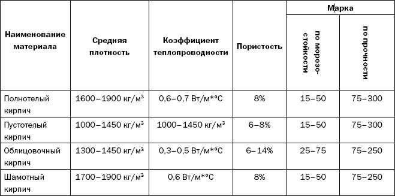
Поскольку кирпич отличается хорошими эксплуатационными характеристиками, в настоящее время его часто используют в индивидуальном строительстве. Но, для того чтобы дом был теплым, кирпичные стены должны иметь достаточную толщину. Если же они тонкие, например в 1 или 1,5 кирпича, то их следует отделать эффективными теплоизоляционными материалами, в роли которых выступают система вентилируемого фасада или штукатурные системы. Выполнение такой технологии потребует как финансовых, так и трудовых затрат.
Но есть и другой выход – использовать облегченные керамические блоки и кирпич. Благодаря им не только уменьшается вес ограждающих конструкций, снижается нагрузка на фундамент, но и повышаются теплоизоляционные свойства стен. Строительная индустрия предлагает новые разработки, например сверхтеплый кирпич «Термолюкс» (250 x 120 x 88 мм ± 0,5 мм), характеризующийся следующими параметрами:
1) теплопроводность – 0,2 м*°C;
2) прочность – М100–125;
3) плотность – 900–1000 кг/м ;
4) морозостойкость – F25.
По своим свойствам ограждающая конструкция из поризованных блоков напоминает деревянную, поскольку в помещении поддерживается оптимальный температурно-влажностный режим, не нарушается воздухообмен.
В индивидуальном строительстве очень широко используются бетонные блоки (камни). Бетон относится к композиционным материалам и является результатом формования и твердения бетонного раствора, в состав которого входят вяжущие вещества, заполнители, вода и специальные добавки. Отличительные особенности бетона – долговечность, огнестойкость. В жидком состоянии бетон бывает пластичным, что позволяет выполнять из него изделия, различные по форме, в частности стеновые блоки: полно– и пустотелые, рядовые и лицевые.
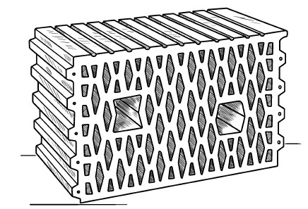
Рис. 10. Поризованный керамический блок
Для снижения плотности и теплопроводности камень формуется пустотелым. Конструктивно он напоминает термос: между его торцевыми стенками расположены воздушные прослойки, разделенные перегородками в виде лабиринта, что исключает возникновение мостиков холода.
Производятся крупноформатные (250 x 380 x 219 мм) поризованные керамические блоки (рис. 10) с такими техническими параметрами:
1) теплопроводность – 0,17 Вт/*°С;
2) прочность – М75;
3) плотность – 790 кг/м ;
4) морозостойкость – F35.
Поризованные керамические блоки от обычных кирпичей и блоков отличаются тем, что исходное сырье, из которого они изготавливаются, имеет необычную структуру. Дело в том, что в глину вводятся органические и минеральные добавки, которые при тепловой обработке сгорают, оставляя в глине поры.
Благодаря пазам и гребням на боковых поверхностях крупноформатного материала, которые выполнены с высокой точностью, стены собираются легко, как конструктор, и при этом отпадает необходимость заполнять вертикальные швы раствором, что улучшает теплотехнические характеристики стены. Для повышения теплоизоляционного эффекта кладку можно вести на легком растворе. Но, чтобы он не попадал в пустоту блоков, их поверхность прикрывается пластиковой сеткой. Дверные и оконные проемы перекрываются керамобетонными перемычками, длина которых может достигать 800–1200 мм.
Стенам из поризованной керамики придаст эстетичность облицовка керамическим или силикатным кирпичом, с которым она хорошо сочетается.
Характеристики бетона (плотность, прочность и др.) в соответствии с условиями использования могут варьироваться. Поэтому стеновые бетонные блоки классифицируются следующим образом:
1) по предназначению.
Блоки производятся для фундамента, стен, перегородок, фасада, а также в виде теплоизоляционных вкладышей для стен;
2) по плотности.
По этому признаку блоки подразделяются на:
а) особо тяжелые (более 2500 кг/м );
б) тяжелые (2200–2500 кг/м );
в) облегченные (1800–2200 кг/м );
г) легкие (500–1800 кг/м );
д) особо легкие (не более 500 кг/м );
3) по весу. Блоки, использующиеся для ручной кладки, имеют вес до 32 кг, с применением техники укладываются блоки весом от 500 кг;
4) по строению, т. е. на полнотелые, пустотелые (объем пустот составляет, как минимум, 15 %), многослойные (в состав входят несущий, теплоизоляционный и облицовочный слои);
5) по применению. При кладке стен используются основные блоки, а также дополнительные, применяющиеся для перевязки, облицовки и отделки оконных и дверных проемов.
Для стен производятся блоки из тяжелых и легких бетонов, а еще из пенополистиролбетона. Тяжелые бетонные блоки представлены несколькими разновидностями. К ним, в частности, относятся цементно-песчаные блоки, изготавливающиеся из смеси цемента, песка и воды. Отличительной особенностью этого материала является высокая прочность. По этому параметру различаются марки М50, М75, М100. Для частного строительства рекомендуются блоки М100, которые производятся в двух разновидностях: в виде полно– и пустотелых блоков (в последних объем пустот составляет не более 30 % объема блока). Если первые используются преимущественно для возведения фундаментов, то вторые предпочтительны для стен, поскольку благодаря пустотам имеют повышенные тепло– и звукоизоляционные свойства. При наличии пустот появляется возможность усилить стеновую конструкцию за счет вертикального армирования, после осуществления которого пустоты замоноличиваются. Фактически в этом случае бетонные блоки можно рассматривать как несъемную опалубку.
При покупке данного материала обратите внимание на имеющиеся на поверхности специфические темные разводы (иногда это характеризуют как мраморность, шагрень). При отсутствии этого визуального признака у вас должны возникнуть сомнения относительно прочностных качеств приобретаемого материала. В блоках либо нарушено соотношение цемента и песка в пользу последнего, либо имеются технологические погрешности – недостаточные усилия при прессовании. Допустимыми дефектами для бетонных блоков являются отклонения от геометрических размеров, но не более 2 мм, и мелкие сколы, но не более 2–3 мм.
К тяжелым бетонным блокам относятся и шлакоблоки, название которых говорит о том, что в их состав, помимо цемента, песка и воды, входит шлак. По своим теплоизоляционным характеристикам такие блоки эффективнее полнотелого кирпича примерно в 1,5 раза и приблизительно во столько же раз дешевле. Стены, возведенные из шлакоблока, достаточно долговечны – не менее 50 лет при условии обеспечения оптимальной влагозащиты и устройства прочного фундамента.
В порядке информирования
Для изготовления шлакоблоков применяются топливные шлаки. В отличие от доменных шлаков (керамзита) они более доступны, но по прочности немного им уступают. Наилучшими считаются шлаки, образующиеся при сжигании антрацита. Шлаки бурых углей, содержащие много примесей, для целей строительства непригодны. Промежуточное положение занимают шлаки других каменных углей, которые чаще всего и применяются для производства шлакобетона. Чтобы получить качественный строительный материал, шлаки не должны включать в свой состав никаких примесей, в частности земли, глины, несгоревших фрагментов угля. Более того, прежде чем использовать шлаки, их необходимо не менее года выдержать под открытым небом в отвалах, обеспечив отведение дождевых, снеговых и паводковых вод. Благодаря такому методу шлак освобождается от необожженных глинистых частиц, вредных солей и пр.
Прочностные и теплоизоляционные свойства шлакобетона определяются его гранулометрическим составом – соотношением крупных (5–40 мм) и мелких (0,2–5 мм) фракций шлакового заполнителя. Если преобладают первые, то получается более легкий, но менее прочный материал, при превалировании вторых – более плотный и теплопроводный. Для наружных стен оптимальна пропорция мелкого и крупного шлака от 3: 7 до 4: 6. В шлакобетоне для внутренних стен доминирует мелкая фракция, а частицы более 10 мм вообще не включаются в состав исходного сырья. Самый мелкий шлак (примерно 25 % общего объема) заменяется песком.
В качестве вяжущего при производстве шлакобетона используется цемент с добавками извести или глины, которые не только экономят цемент, но и способствуют повышению пластичности и удобоукладываемости этого строительного материала. Чтобы приготовить шлакобетон, необходимо соединить в сухом виде цемент, шлак и песок, ввести известковое или глиняное тесто и воду, тщательно перемешать. Полученный шлакобетон должен быть использован в течение 1,5–2 ч.
Стеновые блоки производятся и из легких бетонов, двумя способами: путем включения облегченного заполнителя (так получается керамзитобетон) или посредством искусственного вспенивания вяжущей составляющей (таким образом изготавливаются ячеистые бетоны – пено– и газобетон).
В состав керамзитобетона входят керамзит (вспененная и обожженная глина) – заполнитель с фракциями 5–10 мм, цемент и вода. Компоненты сначала перемешиваются, уплотняются в процессе вибропрессования и подвергаются тепловой обработке. Керамзитобетон совмещает в себе положительные стороны целого ряда строительных материалов: прочность и морозостойкость цементно-песчаных блоков, легкость и низкую теплопроводность пено– и газобетонных блоков, экологичность кирпича. Кроме того, его достоинствами являются:
1) высокие теплоизоляционные свойства. По этому параметру керамзитобетон превосходит кирпич, цементно-песчаные блоки (в том числе и пустотелые). В доме, построенном из керамзитобетона, теплопотери не превышают 25 %, в то время как в кирпичном при отсутствии дополнительного утепления – 40–60 %;
2) хорошие звукоизоляционные качества;
3) низкое влагопоглощение (ср. у кирпича: 6–12 %, у цементно-песчаных блоков: до 15 %, у ячеистых бетонов: до 30 %, у керамзитобетона: 3 %), причем увлажняется только поверхность керамзитобетона, так как воздушные пузырьки, имеющиеся внутри материала, этому препятствуют;
4) химическая стойкость;
5) относительно малый удельный вес: примерно 12 кг. При этом один блок заменяет семь кирпичей, но весит в два раза меньше, чем они. Данное качество дает несколько преимуществ: прежде всего не требуется усиления фундамента, поскольку нагрузка на него снижена; стены могут возводиться в несколько раз быстрее, чем из того же кирпича. Поскольку толщина стен уменьшается, то полезная площадь помещения возрастает приблизительно на 50 %;
6) огнестойкость.
Для индивидуального застройщика важно и то, что по соотношению цены и качества керамзитобетон представляется наиболее оптимальным вариантом для стен, тем более что армирование не требуется. Для дома в три этажа подойдет материал марки М75.
Несмотря на длинный перечень достоинств, у керамзитобетона есть и недостатки:
1) большая хрупкость (в большей степени это относится к пустотелым блокам). По этой причине они не рекомендуются для кладки фундамента;
2) обрабатывать керамзитобетон легче, чем цементнопесчаные блоки, но труднее, чем блоки из ячеистого бетона;
3) стены из керамзитобетона теплые, но тем не менее не дотягивают до нормативов по теплоизоляции, поэтому толщины стены в один блок будет недостаточно. Утеплять такие стены необходимо, как и облицовывать (внешне блоки не столь презентабельны, как кирпич). Для этого подойдут облицовочный кирпич, сайдинг и пр. Из новых отделочных материалов назовем лицевой керамзитобетонный камень (одновременно с керамзитобетонной основой создается и фактурный слой толщиной 5–7 мм, это является гарантией того, что он не будет отслаиваться), который может иметь как гладкую, так и имитирующую природный камень поверхность (гранит, известняк и пр.), а также различный цвет.
К легким относятся и ячеистые бетоны, которых объединяет особая ячеистая структура. В строительстве наиболее востребованными оказались пено– и газобетонные блоки.
Газобетон (газосиликатные блоки) производят из смеси извести, цемента, кварцевого песка и газообразователя, в качестве которого используется алюминиевая пудра (пусть последний компонент вас не пугает, поскольку он превращается в оксид алюминия и в готовом изделии его в восемь раз меньше, чем в кирпиче). В процессе взаимодействия с известью исходное сырье вспенивается, и выделяется водород, придающий материалу пористую структуру, после чего газобетон набирает прочность в автоклавах, в которых он находится при высокой температуре и повышенном давлении. Отсюда еще одно название газобетона – «автоклавный ячеистый бетон». Таким образом, производство газобетона – достаточно сложная технология (поэтому не встречается подделок данного материала), связанная с применением дорогого оборудования и осуществляемая под контролем всех этапов его получения. Поступающий на рынок материал всегда имеет сертификат соответствия. Газобетонные блоки бывают разного размера: 600 x 250 x 100 (200, 250, 350, 450, 500) мм.
Технология производства пенобетона более простая, но на крупных предприятиях сопровождается автоматизированной системой контроля (на небольших частных предприятиях она часто отсутствует, что приводит к изготовлению некачественной продукции) и включает следующие стадии: дозирование исходных компонентов, получение пены путем введения органических или синтетических добавок, смешивание, при котором пузырьки равномерно распространяются по сырью, распределение пенобетона по формам, в которых он и отвердевает. После этого осуществляются распалубка, резка на блоки, укладка на поддоны и складирование готового материала. Его другое название – «неавтоклавный ячеистый бетон».
Между газо– и пенобетоном есть много общего. Это прежде всего их положительные качества:
1) морозостойкость (у газобетона данный показатель такой же, как у кирпича, у пенобетона выше);
2) высокая пористость, благодаря которой блоки обладают хорошими звуко– и теплоизоляционными характеристиками (стена толщиной 30 см по теплосберегающим свойствам соответствует кирпичной стене толщиной 1,7 м);
3) низкая паропроницаемость, поэтому стены из таких блоков обеспечивают необходимый воздухообмен, т. е. «дышат»;
4) пожаробезопасность;
5) легкость в обработке. В течение первых 2–3 лет пено– и газоблоки без труда распиливаются, в них легко вкручиваются шурупы, вбиваются гвозди, прокладывается скрытая электропроводка. Но постепенно пенобетон становится более твердым, а у газобетона этот параметр остается неизменным;
6) геометрическая точность (погрешность может составлять ±1 мм), вследствие чего для кладки применяется не цементно-песчаный раствор, а специальный клеевой состав (последний дороже, чем раствор, но, поскольку расход материала уменьшается, общие расходы будут ниже). Отсюда и тонкие межблочные швы, и отсутствие мостиков холода (средняя толщина раствора составляет 10–12 мм, клея – 2–3 мм). Стена практически получается монолитной. Но это относится только к блокам первой категории. Кроме них, есть материал второй и третьей категорий, который рекомендуется класть на раствор.
Но между газо– и пенобетонными блоками есть и различие. У первых поры открытые, поэтому они активнее впитывают влагу; у вторых поры закрытые, отсюда и более низкое влагопоглощение. Но данная разница не имеет существенного значения, потому что стены и из того, и из другого материала подлежат обязательной облицовке, например, вагонкой. Хороший эффект дают фасадные краски и штукатурка, т. е. «дышащие» покрытия.
Между газобетоном и штукатурным раствором адгезия лучше.
Газобетонные блоки дают меньшую осадочную деформацию: до 0,5–0,7 на 1 м, у пенобетона данный показатель: 3 мм на 1 м. Это объясняется тем, что пенобетон отвердевает постепенно и естественным путем (поскольку этот процесс может идти неравномерно, то возможно появление на блоках трещин) в отличие от газобетона, у которого этот процесс происходит в автоклаве.
Пено– и газобетон имеют разную плотность (обозначается маркой D), диапазон которой варьируется в пределах 300–1200 кг/м .
Прочность газобетона (при одинаковой марке) выше, чем у пенобетона примерно в 2–3 раза. Практически это выражается в том, что для строительства коттеджа подходит газобетон D400–500, пенобетон D600, а еще лучше D700–800.
Недостатком этих материалов является их относительно низкая прочность на изгиб (деформация возможна в пределах 0,5–2 мм/м), т. е. есть риск появления трещин. Подобно кирпичу, они не могут противостоять подвижкам фундамента (в отличие, например, от дерева, способного выдержать существенные подвижки основы). Следовательно, к последнему предъявляются особые требования. Поэтому, прежде чем строить дом, следует разработать проект (без специалиста здесь не обойтись), чтобы рассчитать плотность материала, вес перекрытий и другие особенности конструкции. Кроме того, следует заранее продумать мероприятия, которые могут минимизировать вероятность трещинообразования, такие как:
1) устройство ленточного фундамента;
2) армирование кладки;
3) создание поясов жесткости на уровне перекрытий и под стропильной системой.
Утверждение, что блоки из ячеистого бетона не нуждаются в утеплении, не совсем соответствует действительности, поскольку у данных материалов сопротивление теплопередаче составляет 3,15 м К/Вт при необходимых по СНиПу 23-02-2003 3,5 м К/Вт. Хотя надо признать, что для этого вполне достаточно двухсантиметрового слоя теплой штукатурки.
При покупке блоков из ячеистого бетона профессионалы советуют принимать в расчет соотношение прочности и плотности изделий из этого материала, поскольку при высокой плотности они могут иметь низкую прочность, что определяется количеством пустот: чем больше ячеек, тем прочность ниже.
Прочность блоков определяется марками В1; В1,5; В2; В2,5; В3,5. В зависимости от предназначения применяют блоки той или иной плотности. Для утепления достаточно 350 кг/м , для перегородок – 400 кг/м , для несущих наружных и внутренних стен и перегородок одно-, двух– и трехэтажных построек – 500–600 кг/м при прочности В2,5.
На рис. 11 представлены стеновые блоки из легких бетонов.
В порядке информирования
Чтобы дом получился добротным, т. е. прочным, надежным, долговечным, сохраняющим тепло, экологичным, энергосберегающим, надо правильно выбрать материалы, в том числе и для стен. Чему отдать предпочтение – пено– или газобетону, какой из них используется в строительстве чаще? На основании изложенного можно констатировать, что эксплуатационные характеристики того и другого материала вполне хорошие, хотя и не лишены недостатков. Производство газобетона под силу только крупному предприятию, поскольку требует больших первоначальных вложений, чем и отличается от изготовления пенобетона. Поэтому во втором случае более высок риск приобрести некачественный материал.
Газобетон используется только в виде штучного строительства, пенобетон предполагает и монолитное строительство (не без участия профессионалов).
Цены на тот и другой материал практически не отличаются друг от друга (первоначально газобетон стоил намного дороже), но в итоге газобетонные стены оказываются примерно на треть дешевле пенобетонных при том же уровне прочности и теплосбережения. Поэтому и вывод очевиден: выгоднее использовать газобетон как для несущих стен, так и для перегородок, так как его несущая способность выше. Пенобетон подойдет для ненесущих стен и перегородок в уже эксплуатирующемся доме, поскольку они будут иметь ряд преимуществ по сравнению с кирпичными или гипсокартонными. Из него строятся различные хозяйственные постройки вроде сараев, гаражей и др.
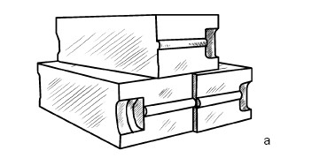
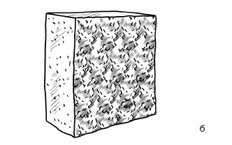
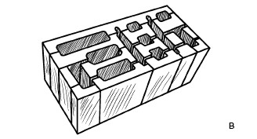
Рис. 11. Стеновые блоки: а – газобетонный; б – пенобетонный; в – керамзитобетонный
Еще одной разновидностью стеновых блоков являются так называемые теплоэффективные блоки с трехслойной структурой (рис. 12): внутренний образуется из поризованного керамзитобетона (класс В10–12, плотность 900–1100 кг/м ), наружный (защитно-декоративный) – из керамзитобетона (класс В15–20, плотность 1600–1700 кг/м ) и промежуточный – из пенополистирола (толщина 120 мм).
Пенополистиролбетон (теплолит) отличается ячеистой структурой и низкой плотностью: до 250–600 кг/м (весит в два раза меньше, чем блок из газобетона). Он представляет собой строительный материал из легкого бетона на основе минерального вяжущего с порами, заполненными частицами вспененного пенополистирола, который выступает в качестве заполнителя. На нашем строительном рынке этот материал появился 25 лет назад (на Западе он известен более 40 лет). Теплолит производится в виде блоков (600 x 375 x 300 мм) и плит (900 x 300 x 100 и 900 x 600 x 100 мм).
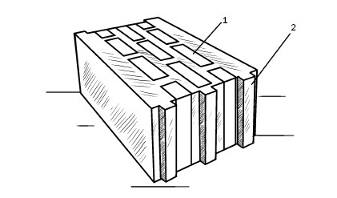
Рис. 12. Блоки из пенополистиролбетона: 1 – вставка из пенополистирола; 2 – слой из легкого бетона
Можно выделить следующие достоинства этого материала:
1) высокие теплосберегающие свойства, поэтому затраты на отопление существенно снижаются. В таком доме летом прохладно, а зимой тепло;
2) хорошие звуко– и гидроизоляционные качества. Материал хорошо поглощает шумы, поэтому из него строятся отличные межкомнатные перегородки;
3) прочность;
4) легкость обработки и удобство в работе;
5) экологичность;
6) негорючесть;
7) морозостойкость;
8) долговечность (более 50 лет);
9) биоинертность (на нем не размножаются вредные микроорганизмы и грибы);
10) устойчивость к УФ-излучению.
Основные технические параметры пенополистиролбетона представлены в табл. 2.
К сказанному следует добавить, что стены из пенополистиролбетонных блоков обходятся примерно в 1,5–2 раза дешевле, чем ограждающие конструкции из ячеистых бетонов и кирпича. Поскольку они более тонкие, то увеличивается полезная площадь помещения.
По сравнению с кирпичными стенами пенополистиролбетонные возводятся в 10 раз быстрее (например, на один этаж коттеджа у трех-четырех рабочих уходит 3–4 дня, т. е. трудозатраты снижаются, а производительность труда возрастает). Это объясняется тем, что один блок, который весит 22 кг, кладется вместо 17 кирпичей, при этом стена толщиной 300 мм по своим характеристикам соответствует двухметровой кирпичной стене. Кроме того, легкие стены не нуждаются в усилении фундамента, вследствие чего его материалоемкость уменьшается на 20–25 %.
Блоки отличаются высокой технологичностью, так как они без труда пилятся, в них прокладывается скрытая проводка, легко забиваются гвозди, вкручиваются шурупы, им можно придать любую геометрическую форму, что сделает здание архитектурно более выразительным.
Поскольку кладка ведется не на растворе, а на клеевой основе, то межблочный шов не превышает 3–4 мм, что препятствует образованию мостиков холода (это дополнительно улучшает теплоизоляционные свойства материала).
Так как блоки имеют малый вес, то при возведении стен не требуется применения тяжелой техники, т. е. снижаются трудозатраты (примерно в 3 раза).
Таблица 2
Основные технические показатели блоковиз пенополистиролбетона
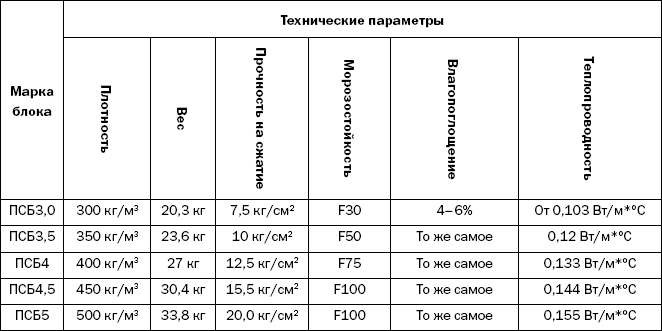
Стены из пенополистиролбетона «дышат», т. е. внутри помещения поддерживается оптимальный воздухообмен, высокая паропроницаемость создает нормальный влажностный режим.
Итак, мы представили те строительные материалы для стен, которым застройщики отдают предпочтение чаще всего. Разумеется, на этом перечень не ограничивается, потому что нередко применяются различные местные материалы. Например, при строительстве одно– или двухэтажного дома используются грунтобетонные камни (320 x 155 x 140 мм), которые являются смесью природного грунта, в частности лесса, лессовых супесей или суглинков (он может быть улучшен за счет введения песка, извести, глины), и вяжущего. Это материал характерен для тех территорий, в которых другие стеновые материалы либо очень дороги, либо отсутствуют. Встречаются блоки на основе торфа, арболита и др.
Следует подчеркнуть, что практически все описанные выше материалы пригодны для возведения межкомнатных перегородок. Добавим только еще гипсовые плиты (76,2 x 305 x 10,2; 76,2 x 305 x 7,6; 76,2 x 305 x 15,2 мм), которые хорошо показали себя в сухих помещениях (влажность не более 70 %). Исходным сырьем для них является гипсовое тесто, в которое вводятся пористые заполнители (шлак, кирпичный бой, опилки и др.).
Прямоугольные плиты имеют гладкие кромки и рифленые поверхности, что улучшает их адгезию со штукатурными материалами.
В заключение предлагаем сводную табл. 3, которая дополнительно поможет вам определиться с выбором того или иного стенового материала.
Таблица 3
Сравнительная характеристика материаловдля возведения стен
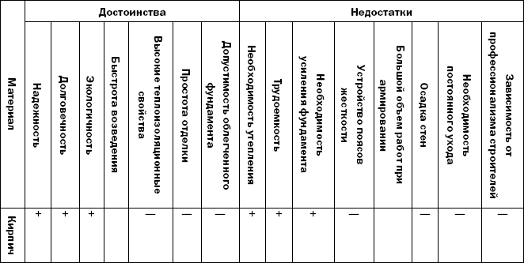
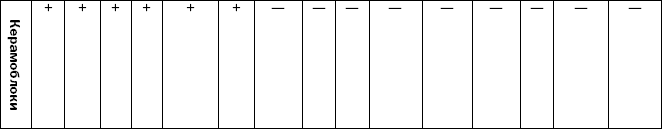
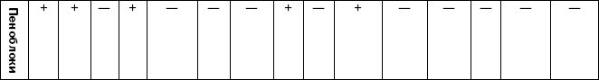
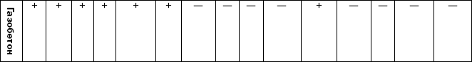
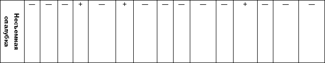
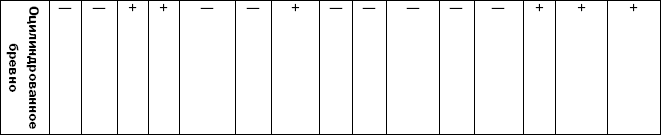
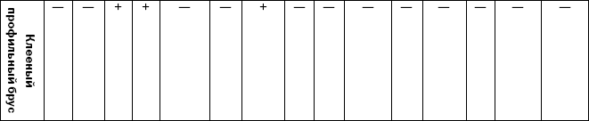
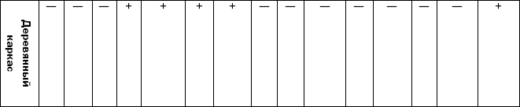
Помимо материалов, из которых возводятся стены, застройщику обязательно понадобятся и другие, в частности вяжущие и заполнители.
Задача вяжущих веществ состоит в том, чтобы разрозненные частицы различных материалов соединить в одно целое. По способу твердения (на воздухе или на воздухе и в воде) вяжущие делятся на:
1) воздушные:
а) глина;
б) воздушная известь;
в) гипс;
2) гидравлические:
а) гидравлическая известь;
б) цементы.
Глина – это мягкие землистые вещества, которые образовались в процессе выветривания горных пород. Благодаря различным примесям в своем составе они различаются цветом, например каолин – глина белого цвета.
Будучи затворенной водой, глина становится пластичной массой, которая легко формуется, а в процессе обжига превращается в камнеподобное тело. Эта способность и лежит в основе производства кирпича, для которого используются тяжелые и средние глины и суглинки.
Известь – результат обжига известняков при температуре 1100–1200 °C. В соответствии с составом известь бывает кальциевой, магнезиальной, доломитовой. Кроме того, она различается по сортам.
По окончании обжига, в процессе которого углекислый кальций разлагается до окиси кальция, что сопровождается выделением углекислого газа, образуется комовая (воздушная) известь, которая называется кипелкой. В зависимости от времени, требующегося для гашения, комовая известь бывает:
1) быстрогасящаяся (не более 8 мин);
2) среднегасящаяся (не более 25 мин);
3) медленногасящаяся (более 25 мин).
Чтобы из извести получить важную составляющую строительных растворов, кипелку гасят. При нарушении правил хранения комовой извести (при повышенной влажности, на земле) она впитывает влагу из воздуха и рассыпается в тонкий порошок, который называется известью-пушонкой. И кипелка, и пушонка при разведении большим количеством воды образуют известковое тесто (но качественным считается то, что получено на основе кипелки).
При незначительных объемах строительных работ известь гасят непосредственно на стройплощадках в специальных творильных ямах, которые обшиты досками. Она постепенно заливается водой, перемешивается и выдерживается в таком состоянии, как минимум, две недели. За это время непогасившиеся частицы до конца проходят этот процесс, который сопровождается выделением большого количества тепла и кипением (отсюда и название «известь-кипелка»). Правильно приготовленное известковое тесто наполовину состоит из гашеной извести и такого же количества воды. В яме оно может содержаться длительное время, не изменяя своих свойств, так как в воде воздушная известь не твердеет. Известковое тесто, разбавленное водой, превращается в известковое молоко.
Гипс, который применяется в строительстве, производится посредством обжига и измельчения природного гипса – сернокислого известняка. При этом он теряет 50 % химически связанной воды. Отличительной особенностью гипса является то, что при схватывании он выделяет тепло и увеличивается в объеме примерно на 1 %.
Гидравлическая известь получается в результате обжига мергелистых известняков при температуре 900– 1100 °C. В ее состав входят свободные оксиды кальция и магния, низкоосновные силикаты, алюминаты кальция, благодаря которым гидравлическая известь может твердеть не только на воздухе, но и в воде. Гидравлическая известь, затворенная водой, постепенно превращается в известковое тесто. Примерно две недели она должна содержаться в воздушно-влажных условиях, в течение которых твердеет, а потом переносится в воду. Гидравлическая известь находит применение в низкомарочных растворах и бетонах, которые используются в условиях повышенной влажности.
Цементы относятся к гидравлическим вяжущим. Их получают из мергелей или из смесей известняка и глины. В процессе производства сырье до полного спекания обжигается в специальных условиях. В результате получается клинкер, который вместе с необожженным гипсовым камнем и гидравлическими добавками измельчается до порошкообразного состояния. Он должен быть настолько тонким, чтобы мог пройти сквозь сито с ячейками размером 0,085 мм. Цементы входят в состав растворов и бетонов, применяющихся в строительстве.
Существует несколько видов цементов, которые представлены различными марками. Для строительных целей чаще всего применяются портландцементы:
1) портландцемент (М300, 400, 500, 600);
2) пластифицированный портландцемент (М300, 400, 500);
3) шлакопортландцемент (М300, 400, 500); 4) пуццолановый портландцемент (М300, 400, 500);
5) магнезиальный портландцемент (М300, 400, 500);
6) шлаковый магнезиальный портландцемент (М300, 400, 500).
Марка цемента устанавливается по пределу прочности на сжатие образцов, изготовленных из жесткого трамбованного раствора при соотношении 1: 3. Портландцемент начинает схватываться примерно через 45 мин, а полностью процесс заканчивается не позднее 12 ч с момента затворения, прочность же цемент набирает в течение 28 дней.
Поскольку цементы отличаются способностью активно впитывать влагу, их необходимо хранить в сухом помещении, в противном случае качество значительно снижается.
В строительстве для кладки стен используются специальные растворы. Помимо цемента и воды, в них добавляются заполнители, в частности пески – либо природные обычные (например, речные), либо природные легкие (из ракушечника и пр.).
Качество раствора зависит и от чистоты заполнителей. Поэтому пески тщательным образом освобождаются от всех примесей. В их составе соли не должны превышать 1 %. Пески специально тестируются на содержание гумуса (торфа, грунта, глины) с помощью 3 %-ного раствора едкого натра.
Образцы в течение 10 мин три раза взбалтывают, после чего через сутки по степени окрашивания судят о наличии или отсутствии гумуса. При повышенном его содержании раствор имеет цвет от коричневого до коричнево-желтого, при незначительном – от желтого до коричнево-желтого, при отсутствии – от бесцветного до светло-желтого.
Также имеет важное значение размер песчаных частиц. По этому признаку можно выделить пески:
1) мелкие (размер зерен до 1 мм);
2) средние (1–2 мм);
3) крупные (2–5 мм).
Для получения песка нужной зернистости его пропускают сквозь сито с ячейками необходимого размера (5; 2,5; 1,2; 0,6; 0,3; 0,15 мм).
При возведении кирпичных и каменных стен более 20 % объема кладки приходится на раствор, поэтому необходимо иметь представление и о нем. Строительный раствор заполняет пространство между кирпичами, камнями и блоками, образуя вместе с ними стеновую конструкцию. Прочность, долговечность и монолитность ее определяются также качеством раствора.
В состав растворов входят вяжущие, заполнители и вода, взятые в том или ином соотношении. По виду вяжущего различают растворы воздушного или гидравлического твердения. В зависимости от количества компонентов в растворах они бывают:
1) простыми;
2) сложными.
В первых представлен только один вяжущий компонент: цемент или известь, поэтому и растворы называются известковыми или цементными.
Во вторых имеется комбинация вяжущих, например цемент и известь (цементно-известковый раствор), цемент, известь и глина (цементно-известково-глиняный раствор).
В соответствии с тем, какую нагрузку на сжатие может выдержать раствор, ему присваивается та или иная марка. Для кладочных растворов это 0, 2, 4, 10, 25, 50, 75, 100.
В порядке информирования
Чтобы раствор мог равномерно заполнить горизонтальные и вертикальные швы, обеспечив качественное сцепление состава с поверхностью кирпича, камня или блока, он должен иметь определенную подвижность (эластичность) и способность удерживать воду. Первый параметр зависит от целого ряда признаков, в частности от пропорции компонентов, их характеристик и особенностей. В зависимости от того, с какой целью применяется раствор, его подвижность варьируется в пределах 4–15 см и может быть измерена глубиной погружения эталонного конуса, имеющего вес, равный 300 г, высоту 15 см и угол в вершине 30°.
Подвижность раствора тем выше, чем глубже опускается конус в раствор. Для кирпичной кладки достаточно, чтобы раствор имел подвижность в интервале 9–13 (более густой раствор создаст трудности при использовании, а через какое-то время и вовсе покроется трещинами); для пустотелого кирпича – 7–8 (более жидкий раствор, заполнив пустоты, значительно снизит теплоизоляционные качества материала); для кладки бутового камня – 13–15. От того, насколько грамотно подобрана эластичность раствора, зависят его транспортировка, укладка и трудоемкость процесса.
Во время кладки раствор следует время от времени перелопачивать, чтобы не допустить расслоения. Кроме того, раствор должен быть однородным, что достигается перемешиванием его электродрелью с соответствующей насадкой или в бетономешалке. Качество раствора можно оценить и по тому, как равномерно он покрывает материал, насколько тонкий слой образует и имеются ли на кирпиче чистые места, которые свидетельствуют о том, что у раствора недостаточная удобоукладываемость.
И последнее: на 1 м кладки требуются 400 шт. одинарного кирпича и 0,24 м кладочного раствора.
Представляем растворы, которые применяются в строительстве.
1. Простые:
1) при затворении песка известковым молоком получается известковый раствор (соотношение извести и заполнителя может быть различным: 1: 1; 1: 1,5; 1: 2;
1: 2,5; 1: 3; 1: 3,5; 1: 4), который характеризуется удобоукладываемостью и хорошей адгезией с кладочным материалом. Как правило, такие растворы имеют низкие марки и применяются для оштукатуривания внутренних поверхностей и при кладке стен малоэтажных построек;
2) вяжущим в гипсовых растворах является строительный гипс. Такие растворы находят применение для кладки стен и простенков, возводимых из гипсовых камней и плит;
3) цементные растворы используются при закладывании фундамента, стен толщиной не более 250 мм и стен, выполненных способом облегченной кладки. Кроме того, они применяются для кладки стен зимой методом замораживания, а также в помещениях с повышенной влажностью. В частном домостроении для стеновой кладки цементные растворы не рекомендуются. Исключение составляет кладка облицовки, которая в большей степени подвержена воздействию природноклиматических факторов, а сами стены возводятся на сложных или известковых растворах.
2. Сложные:
1) чтобы повысить прочность известкового раствора, в него вводится цемент. Основное их предназначение – кладка внутренних стен, оштукатуривание стен подвальных помещений (для кладки, осуществляющейся ниже уровня грунтовых вод, эти растворы не используются). Для получения цементно-известкового раствора в известковое тесто добавляется такое количество воды, чтобы получилось известковое молоко, которым затворяется смесь песка и цемента (их соединяют в сухом виде и тщательно перемешивают). В зависимости от степени влажности строящегося помещения пропорции цемента, известкового теста и песка изменяются, некоторые из возможных комбинаций представлены в табл. 4 и 5.
В результате раствор становится более пластичным и «теплым» (им можно оштукатуривать стены для повышения их теплоизолирующих свойств, отсюда и название «теплые штукатурки»);
2) более прочными, чем цементно-известковые растворы, являются цементно-глиняные (соотношение цемента и глины 1: 1). Помимо этого, их отличает быстрое схватывание, они в меньшей степени склонны к расслоению при транспортировке. Такие растворы удобно использовать в зимнее время, поскольку глина, обладая способностью удерживать воду, при оттаивании повышает прочностные характеристики раствора.
В порядке информирования
Итак, строительный раствор – это смесь песка, связующего и воды. Основная их часть – песок, размер частиц которого составляет не более 4 мм. Компоненты раствора при составлении смеси отмеряются объемными частями. Чтобы не нарушить пропорции, меры объема должны быть одинаковыми. Например, влажного песка в ведре больше, чем сухого. Для раствора следует использовать исключительно чистую пресную воду.
В случае когда требуется большое количество раствора, выгоднее готовить его самостоятельно, используя для этого бетономешалку. Если же объем работ небольшой, то дешевле и удобнее приобрести сухую строительную смесь. При этом не требуется покупать, отмерять, перемешивать отдельные компоненты – достаточно влить в смесь столько воды, сколько указано в инструкции, и с помощью специального миксера (или дрели с насадкой) довести ее до однородного состояния. Строительные смеси составляются высокопрофессиональными специалистами, следовательно, раствор, приготовленный из такого состава, будет соответствующего качества.
Таблица 4
Состав растворов для кладки стен при влажности помещений менее 60 %
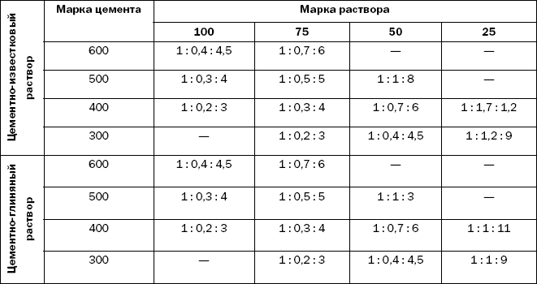
Таблица 5
Состав растворов для кладки стен при влажности помещений более 60 %
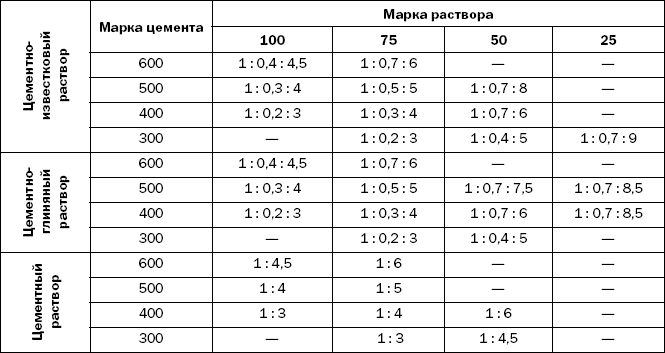

Как построить Дом ? . E-mail: _pvi@ukr.net
администрация сайта не претендует на их авторство и не несёт ответственности за их содержание.